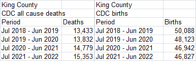

Part 1 is here: statistic.html.
In May 2024 Nicolas Hulscher, Michael Cook, Raphael Stricker, and Peter A. McCullough published a preprint titled "Excess Cardiopulmonary Arrest and Mortality after COVID-19 Vaccination in King County, Washington": https://www.preprints.org/manuscript/202405.1665/v1. King County is the most populous county of the Seattle metropolitan area.
The authors used data from PDFs published by the Emergency Medical Services Division of King County, which featured tables like this: [https://kingcounty.gov/en/dept/dph/health-safety/health-centers-programs-services/emergency-medical-services/reports-publications]
The authors seem to have calculated the number of cardiac arrest deaths by multiplying the figure for the "number of cardiac arrests for which ALS resuscitation efforts were attempted" with the rounded percentage of people who didn't survive until they were discharged from hospital alive, which gave them a figure of 1121 deaths in 2020 (from 1350*(100-17)/100)). However the authors could've derived the exact figure by simply subtracting the number of patients who survived to hospital discharge from the number of treated patients, which would've given them the figure of 1116 from 1350-234.
The authors also incorrectly entered the survival rate in 2021 as 18% even though it should've been 16%, but I didn't find other errors in their Table 1 when I compared it to the original PDF reports:
| Hulscher Table 1 | Original PDFs | |||||
|---|---|---|---|---|---|---|
| Year | Treated | Survived | Dead | Treated | Survived | Dead |
| 2005 | 1124 | 190 (17%) | 934 | |||
| 2006 | 993 | 174 (18%) | 819 | |||
| 2007 | 1035 | 191 (18%) | 844 | |||
| 2008 | 1046 | 199 (19%) | 847 | |||
| 2009 | 1072 | 206 (19%) | 866 | |||
| 2010 | 1069 | 218 (20%) | 851 | |||
| 2011 | 1047 | 223 (21%) | 824 | |||
| 2012 | 1134 | 252 (22%) | 882 | |||
| 2013 | 1135 | 235 (21%) | 900 | |||
| 2014 | 1246 | 267 (21%) | 979 | |||
| 2015 | 1114 | 20% | 891 | 1114 | 221 (20%) | 893 |
| 2016 | 1228 | 24% | 933 | 1228 | 288 (24%) | 940 |
| 2017 | 1215 | 21% | 960 | 1215 | 251 (21%) | 964 |
| 2018 | 1298 | 22% | 1012 | 1298 | 289 (22%) | 1009 |
| 2019 | 1308 | 19% | 1059 | 1308 | 253 (19%) | 1055 |
| 2020 | 1350 | 17% | 1121 | 1350 | 234 (17%) | 1116 |
| 2021 | 1499 | 18% | 1229 | 1499 | 242 (16%) | 1257 |
| 2022 | 1598 | 18% | 1310 | 1588 | 288 (18%) | 1300 |
| 2023 | 1697 * | 18% * | 1392 * | 1669 | 311 (19%) | 1358 |
The cells for 2023 above are marked with an asterisk because Hulscher et al. calculated them as a linear projection of the data for 2021 and 2022. In the real data for 2023 that was published in September 2024, the number of deaths was slightly lower than Hulscher's projected number of deaths for 2023:

I think the authors should've just omitted 2023 from their paper instead of including projected data for 2023, or in their plots they should've somehow visually differentiated the projected data from the actual data. Many people tweeted a screenshot of one of their figures where it wasn't indicated anywhere that the data for 2023 was projected.
The original PDF reports go back to 2003 but reports for data before 2005 are missing the table which shows the number of treated and survived cardiac patients. Hulscher et al. only included data from 2015 onwards, which might be because there was a big jump down in the number of deaths between 2014 and 2015. I didn't find any explanation for the jump in the report for 2016 which featured the data for 2015. I don't know if it's because there was a high number of deaths in 2014, or if for example before 2015 the King County EMS used to serve more parts of the Seattle metropolitan area outside of King County, or if there was a change to case definition.
The PDF report for the year 2007 said that "the decrease in 2006 is due to a modification in case definition": [https://cdn.kingcounty.gov/-/media/king-county/depts/dph/documents/health-safety/health-programs-services/emergency-medical-services/reports/2007-annual-report.pdf]

But anyway, the long-term trend in the number of deaths in the EMS data seems to be curved upwards, so here my excess number of deaths relative to the 2015-2020 linear baseline was even higher in 2010 than in 2021 or 2022:

library(data.table);library(ggplot2)
d=data.table(x=2005:2023)
d$y=c(934,819,844,847,866,851,824,882,900,979,893,940,964,1009,1055,1116,1257,1300,1358)
d$z="Actual deaths"
p1=d[,.(x,y=d[x%in%2015:2020,predict(lm(y~x),d)],z="2015-2020 linear trend")]
p2=d[,.(x,y=d[x%in%2006:2019,predict(lm(y~poly(x,2)),d)],z="2006-2019 quadratic trend")]
p=rbind(d,p1,p2)[,z:=factor(z,unique(z))]
ybreak=pretty(p$y,9);xstart=min(p$x);xend=max(p$x)
color=c("black",hsv(22/36,1,.8),"#00aa00")
ggplot(p,aes(x,y))+
geom_line(aes(color=z),linewidth=.3)+
geom_point(aes(alpha=z,color=z),stroke=0,size=.9)+
geom_line(data=p[z==z[1]],aes(color=z),linewidth=.3)+
labs(x=NULL,y=NULL,title="Yearly cardiac arrest deaths in King County EMS data")+
scale_x_continuous(limits=c(xstart-.5,xend+.5),breaks=xstart:xend)+
scale_y_continuous(limits=range(ybreak),breaks=ybreak)+
scale_color_manual(values=color)+
scale_alpha_manual(values=c(1,0,0))+
coord_cartesian(clip="off",expand=F)+
theme(axis.text=element_text(size=7,color="black"),
axis.text.x=element_text(angle=90,vjust=.5,hjust=1),
axis.ticks=element_line(linewidth=.3,color="black"),
axis.ticks.length=unit(3,"pt"),
axis.ticks.length.x=unit(0,"pt"),
legend.background=element_blank(),
legend.box.background=element_rect(linewidth=.3),
legend.justification=c(0,1),
legend.key=element_blank(),
legend.key.height=unit(9,"pt"),
legend.key.width=unit(17,"pt"),
legend.margin=margin(4,4,4,4),
legend.position=c(0,1),
legend.spacing.x=unit(1,"pt"),
legend.spacing.y=unit(0,"pt"),
legend.text=element_text(size=7,vjust=.5),
legend.title=element_blank(),
panel.background=element_blank(),
panel.border=element_rect(fill=NA,linewidth=.3),
panel.grid.major=element_blank(),
plot.margin=margin(5,5,5,5),
plot.subtitle=element_text(size=7,margin=margin(,,4)),
plot.title=element_text(size=7.6,face=2,margin=margin(1,,4)))
ggsave("1.png",width=3.5,height=2.4,dpi=400*4)
system("mogrify -resize 25% 1.png")
The paper by Hulscher et al. showed that there was a much higher number of excess deaths in 2021 than 2020. However compared to other US states, Washington State had an unusually low number of COVID deaths in 2020 relative to 2021 and 2022:

The EMS data included all cardiac arrest deaths regardless of cause, so it's similar to deaths by multiple cause of death at CDC WONDER. So part of the excess deaths in 2021 and 2022 might be due to COVID, because from the next plot which shows monthly cardiac deaths in Washington State, you can see that spikes in MCD cardiac deaths coincided with COVID waves, and the number of excess MCD cardiac deaths got much lower when I subtracted deaths that also had MCD COVID:

library(data.table);library(ggplot2);library(lubridate);library(ggtext)
cul=\(x,y)y[cut(x,c(y,Inf),,T,F)]
t=fread("http://sars2.net/f/wonderwashingtoncardiac.csv")[age>=45]
pop=fread("http://sars2.net/f/uspopdeadmonthly.csv")
t=merge(t,pop[,.(pop=sum(pop)),.(month=date,age=cul(age,seq(45,85,10)))])
t=t[,month:=as.Date(paste0(month,"-1"))]
t[,dead:=dead/days_in_month(month)]
months=sort(unique(t$month))
base=t[!grepl("COVID",cause)&year(month)%in%2011:2019][,dead:=nafill(dead,,0)]
t=merge(base[,.(month=months,base=predict(lm(dead/pop~month),.(month=months))),.(age,cause)],t)
t[,base:=base*pop]
p=t[,.(base=sum(base),dead=sum(dead)),.(date=month,cause)]
and=fread("http://sars2.net/f/wonderwashingtoncardiacandcovid.csv")
and=and[,date:=as.Date(paste0(month,"-1"))][,.(date,andcovid=dead/days_in_month(date))]
p=rbind(p,merge(and,p[cause%like%"Multiple"])[,.(date,base=NA,cause="MCD I00-I99 and not MCD COVID",dead=dead-andcovid)])
p[,cause:=factor(cause,unique(cause)[c(2,1,3)])]
xstart=as.Date("2015-1-1");xend=as.Date("2024-1-1")
p=p[date>=xstart&date<=xend]
xbreak=seq(xstart,xend,"6 month");xlab=c(rbind("",2015:2023),"")
ystart=0;yend=p[,max(base,dead,0,na.rm=T)*1.02];ybreak=pretty(p[,c(base,dead,0)],8)
color=c("black","#ff2222","#ffaaaa")
lab=c("Actual deaths","Baseline");lab=factor(lab,unique(lab))
ggplot(p,aes(x=date+14,y=dead,color=cause))+
geom_vline(xintercept=seq(xstart,xend,"year"),color="gray85",linewidth=.25)+
geom_hline(yintercept=c(ystart,yend),linewidth=.25,lineend="square")+
geom_vline(xintercept=c(xstart,xend),linewidth=.25,lineend="square")+
geom_line(linewidth=.3)+
geom_point(stroke=0,size=.6,show.legend=F)+
geom_line(aes(y=base),linetype="42",linewidth=.3)+
labs(title="Washington State, ages 45+: Monthly deaths with cause I00-I99 (diseases of\nthe circulatory system) divided by number of days in month",x=NULL,y=NULL)+
scale_x_continuous(limits=c(xstart,xend),breaks=xbreak,labels=xlab)+
scale_y_continuous(limits=c(ystart,yend),breaks=ybreak)+
scale_color_manual(values=color)+
scale_linetype_manual(values=c("solid","42"),labels=lab)+
coord_cartesian(clip="off",expand=F)+
theme(axis.text=element_text(size=7,color="black"),
axis.ticks.x=element_line(color=alpha("black",c(1,0))),
axis.ticks=element_line(linewidth=.25,color="black"),
axis.ticks.length=unit(.2,"lines"),
axis.title=element_text(size=8),
legend.background=element_blank(),
legend.box.just="left",
legend.spacing=unit(5,"pt"),
legend.justification=c(0,0),
legend.key=element_blank(),
legend.key.height=unit(9,"pt"),
legend.key.width=unit(17,"pt"),
legend.position=c(0,0),
legend.spacing.x=unit(2,"pt"),
legend.spacing.y=unit(0,"pt"),
legend.box.background=element_rect(fill="white",color="black",linewidth=.3),
legend.margin=margin(4,4,4,4,"pt"),
legend.text=element_text(size=7,vjust=.5),
legend.title=element_blank(),
panel.background=element_blank(),
plot.margin=margin(5,5,5,5),
plot.title=element_text(size=7.6,face=2,margin=margin(,,4)))
ggsave("1.png",width=4.2,height=2.8,dpi=400*4)
sub="\u00a0 Source: wonder.cdc.gov/mcd.html. Age groups below 45 were excluded because they had some months with less than 10 deaths so the number of deaths was suppressed.
In order to calculate the dashed baseline, first a linear trend was calculated for CMR within each 10-year age group in 2021 to 2019, and then the projected trend was multiplied by the population size of each age group to get the monthly expected deaths for each age group.
Monthly resident population estimates were downloaded from www2.census.gov/programs-
surveys/popest/datasets/2020-2023/national/asrh/nc-est2022-alldata-r-file0{1..8}.csv, and from the corresponding files in the 2010-2020 directory. In order to get rid of a sudden jump in population size after the switch from the 2010-2020 to 2020-2023 estimates, the 2010-2020 estimates were multiplied by a linear slope so that they matched the 2020-2023 estimates at the point where the estimates were merged in April 2020 (see sars2.net/ethical.html#Files_
for_US_population_estimates_by_single_year_of_age_up_to_ages_100)."
system(paste0("f=1.png;magick 1.png -resize 25% 1.png;mar=32;w=`identify -format %w $f`;magick \\( $f -gravity southwest -chop 0x20 \\) \\( -size $[w-mar*2]x -font Arial -interline-spacing -3 -pointsize 38 caption:'",sub,"' -gravity southwest -splice $[mar]x20 \\) -append 1.png"))
If you simply look at the yearly total number of deaths in ages 45 and above in Washington State with both MCD COVID and MCD I00-I99, it was about 70% higher in 2021 than 2020:
> and=fread("http://sars2.net/f/wonderwashingtoncardiacandcovid.csv")
> and[,.(dead=sum(dead)),.(year=substr(month,1,4))]|>print(r=F)
2020 1614
2021 2766
2022 2134
2023 849
2024 473
The paper by Hulscher et al. included this plot which showed that the mid-year resident population estimates of King County decreased by about 0.94% between 2020 and 2021:

Hulscher et al. wrote that they used population estimates for King County published by the US Census Bureau and cited this URL as their source: https://www2.census.gov/programs-surveys/popest/tables/. Uncle John Returns pointed out that the drop in population size between 2020 and 2021 was missing from the Population Interim Estimates (PIE) published by the Washington State Department of Health: [https://x.com/UncleJo46902375/status/1855602491083161778]

From the R code of the Population Interim Estimates, I found that the population estimates for 2020 to 2023 were taken from a dataset published by the Washington State Office of Financial Management (OFM). [https://github.com/PHSKC-APDE/frankenpop_pub/blob/main/rake_and_output%2eR, https://ofm.wa.gov/washington-data-research/population-demographics/population-estimates/estimates-april-1-population-age-sex-race-and-hispanic-origin] The OFM estimates also had a bigger increase in population size between 2022 and 2023 than the Census Bureau estimates:

dlf=\(x,y,...){if(missing(y))y=sub(".*/","",x);for(i in 1:length(x))download.file(x[i],y[i],quiet=T,...)}
dlf("https://www2.census.gov/programs-surveys/popest/tables/2020-2023/counties/totals/co-est2023-pop-53.xlsx")
dlf("https://www2.census.gov/programs-surveys/popest/tables/2010-2020/intercensal/county/co-est2020int-pop-53.xlsx")
dlf("https://www2.census.gov/programs-surveys/popest/tables/2010-2019/counties/totals/co-est2019-annres-53.xlsx")
dlf("https://www2.census.gov/programs-surveys/popest/tables/2000-2010/intercensal/county/co-est00int-01-53.csv")
dlf("https://www2.census.gov/programs-surveys/popest/tables/2000-2009/counties/totals/co-est2009-01-53.csv")
dlf("https://www2.census.gov/programs-surveys/popest/tables/2000-2010/intercensal/county/co-est00int-01-53.csv")
library(data.table);library(ggplot2);library(readxl)
agecut=\(x,y)cut(x,c(y,Inf),paste0(y,c(paste0("-",y[-1]-1),"+")),T,F)
kim=\(x)ifelse(x>=1e3,ifelse(x>=1e6,paste0(x/1e6,"M"),paste0(x/1e3,"k")),x)
pop1=fread("co-est2009-01-53.csv",skip=1)
p=pop1[V1==".King County",.(year=2009:2000,pop=as.integer(gsub(",","",.SD)),z="2000-2009"),.SDcols=2:11]
pop2=fread("co-est00int-01-53.csv",skip=1)
p=rbind(p,pop2[V1==".King County",.(year=2000:2010,pop=as.integer(gsub(",","",.SD)),z="2000-2010 intercensal"),.SDcols=c(3:12,14)])
pop3=read_excel("co-est2019-annres-53.xlsx")
p=rbind(p,list(year=2010:2019,pop=as.integer(dplyr::filter(pop3,pop3[[1]]==".King County, Washington")[4:13]),z="2010-2019"))
pop4=read_excel("co-est2020int-pop-53.xlsx")
p=rbind(p,list(year=2010:2019,pop=as.integer(pop4[pop4[[1]]%like%"King",3:12]),z="2010-2020 intercensal"))
pop5=read_excel("co-est2023-pop-53.xlsx")
p=rbind(p,list(year=2020:2023,pop=as.integer(pop5[pop5[[1]]%like%"King",][3:6]),z="2020-2023"))
p=rbind(p,data.table(year=1999:2023,pop=c(1729058,1737034,1754090,1758685,1763440,1775297,1795268,1822967,1847986,1875020,1912012,1931249,1969722,2007440,2044449,2079967,2117125,2149970,2188649,2233163,2252782,2274315,2252305,2266789,2266789),z="CDC WONDER"))
p=rbind(p,data.table(year=2000:2022,pop=c(1737045.79,1755487.08,1777514.01,1788082.03,1800783.04,1814999.24,1845208.98,1871097.95,1891124.97,1909204.99,1931249,1943608.44,1959305.04,1985687.59,2022469.68,2059056.02,2111487.04,2160624.39,2198063.56,2234581.41,2269674.95,2287050.05,2317700.05),z="DoH PIE"))
p=rbind(p,list(year=2020:2023,pop=c(2269675,2287050,2317700,2347800),z="ofm.wa.gov"))
# p=rbind(p,list(year=2015:2022,pop=c(2.127,2.168,2.205,2.228,2.250,2.274,2.252,2.265)*1e6,z="Hulscher et al."))
p[,z:=factor(z,unique(z))]
xstart=2000;xend=2023
p=p[year%in%xstart:xend]
ybreak=pretty(p$pop);ystart=ybreak[1];yend=max(ybreak);ylab=sprintf("%.1fM",ybreak/1e6)
ggplot(p,aes(x=year,y=pop))+
coord_cartesian(clip="off",expand=F)+
geom_vline(xintercept=c(2009.5,2019.5),color="gray80",linewidth=.23)+
geom_line(aes(color=z,alpha=z),linewidth=.3)+
geom_point(aes(color=z,shape=z,size=z),stroke=.3)+
labs(title="Resident population estimates of King County, Washington",subtitle="Sources: www2.census.gov/programs-surveys/popest/tables, CDC WONDER,
phskc-apde.shinyapps.io/PopPIE (Washington State Department of Health
population interim estimates; based on OFM in 2020-2022), ofm.wa.gov/
washington-data-research/population-demographics/population-estimates/
estimates-april-1-population-age-sex-race-and-hispanic-origin. OFM and PIE
are estimates on April 1st but other sources are mid-year estimates.",x=NULL,y=NULL)+
scale_x_continuous(limits=c(xstart-.5,xend+.5),breaks=seq(xstart-.5,xend+.5,.5),labels=c(rbind("",xstart:xend),""))+
scale_y_continuous(labels=ylab,breaks=ybreak,limits=c(ystart,yend))+
scale_color_manual(values=c(hsv(12/36,c(.8,1),c(.8,.4)),hsv(22/36,c(.8,1),c(1,.5)),hsv(30/36,.8,1),"black",hsv(4/36,.5,.6),"red"))+
scale_shape_manual(values=c(16,16,16,16,16,4,1,3))+
scale_alpha_manual(values=c(1,1,1,1,1,0,0,0))+
scale_size_manual(values=c(.7,.7,.7,.7,.7,1,1,1))+
guides(color=guide_legend(nrow=3,byrow=F))+
theme(axis.text=element_text(size=7,color="black"),
axis.text.x=element_text(angle=90,vjust=.5,hjust=1),
axis.ticks=element_line(linewidth=.2,color="black"),
axis.ticks.length=unit(3,"pt"),
axis.ticks.length.x=unit(0,"pt"),
legend.background=element_blank(),
legend.box.spacing=unit(0,"pt"),
legend.justification="left",
legend.key=element_blank(),
legend.key.height=unit(8,"pt"),
legend.key.width=unit(17,"pt"),
legend.margin=margin(,,4),
legend.position="top",
legend.spacing.x=unit(2,"pt"),
legend.spacing.y=unit(1,"pt"),
legend.text=element_text(size=7,vjust=.5),
legend.title=element_blank(),
panel.background=element_blank(),
panel.border=element_rect(fill=NA,linewidth=.23),
plot.margin=margin(5,5,5,5),
plot.subtitle=element_text(size=6.8,margin=margin(,,3)),
plot.title=element_text(size=7.3,face=2,,margin=margin(1,,4)))
ggsave("1.png",width=3.8,height=2.9,dpi=350*4)
system("magick 1.png -resize 25% 1.png")
A decrease in population size between mid-2020 and mid-2021 doesn't seem to be supported by data for births minus deaths plus net migration either. Uncle John Returns pointed out that on CDC WONDER King County had 46,942 births and 14,779 deaths between July 2020 and June 2021: [https://x.com/UncleJo46902375/status/1855697015671513127]

In a discontinued Census Bureau dataset for migration by county which includes data up to the year 2020, in the year 2020 King County had an estimated net migration of -6,437 people: [https://fred.stlouisfed.org/series/NETMIGNACS053033]

Assuming the same net migration between mid-2020 and mid-2021, 46942-14779-6437 would be 25,726 more people in 2021 than 2020, which is actually higher than the OFM/PIE population estimates where there's 17,375 more people in 2021 than 2020. (The OFM population estimates are for April 1st and not July 1st, but it shouldn't make much difference.)